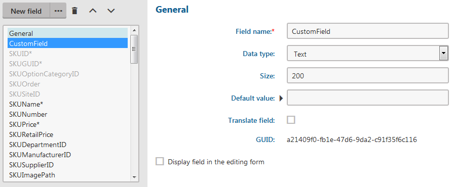
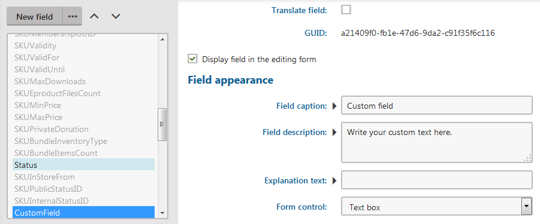
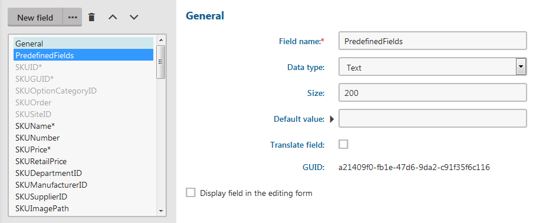
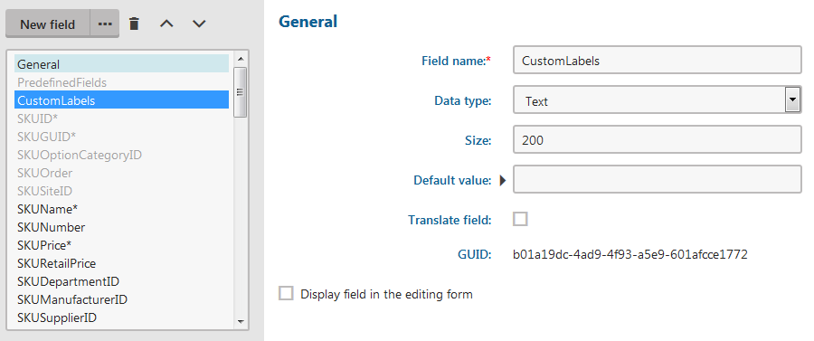

Customizing product option forms
In Kentico, you can add multiple fields to product options for specifying other option's attributes. You can also create a field that is visible only if a specific value is selected in another field.
First, you need to add a field to the product option form. Then, enable the field on the alternative form of the SKU. If you want one of the fields to be somehow dependent on each other, set dependencies after that.
Before you start to customize product option form, learn about product variants. Product variants extend the product options' functionality.
Adding a field to the product option form
With a field related to SKUs, you can store additional information about the SKUs. You add a field with the usual field editor in the Modules application.
Open the Modules application.
Edit (
 ) the E-commerce module.
) the E-commerce module.Switch to the Classes tab.
Edit (
) the SKU class.Switch to the Fields tab.
Create a new field based on your needs.
Leave Standard field in Field type.
Clear the Display field in the editing form check box.
Click Save.

Finished custom field
The system adds the field to the SKU form and also creates a record of the field in your database.
Enabling the field in an alternative form
By enabling the field in an SKU's alternative Option form, you can work with the field from the administration interface when creating or modifying a product option.
Open the Modules application.
Edit (
) the E-commerce module.Switch to the Classes tab.
Edit (
) the SKU class.Switch to the Alternative forms tab.
Edit (
) one of the Option forms to which you want to add the custom field.Switch to the Fields tab.
Select the custom field, which you want to enable, in the left list.
Select Display field in the editing form.
Set the form appearance based on your needs.
Click Save.

Enabled custom field
The system starts to display the custom field on the Options tab in details of every option of the chosen product option category type.
Setting visibility dependency on two fields
If you want one field to be visible only when there is a specific value in another field, you need to set it while editing the fields. See the following example.
We sell T-shirts and every T-shirt has a printed label. There are two types of labels – predefined ones and custom ones. Every T-shirt has a dropdown list in which there are a list of predefined labels and "Custom label". If a user selects "Custom label", a textbox displays, to which the user writes their custom label.
Since there are two types, we want to edit the attribute option form, where we create two new fields, one for predefined labels and one for custom labels.
Creating the fields
Open the Modules application.
Edit (
) the E-commerce module.Switch to the Classes tab.
Edit (
) the SKU class.Switch to the Fields tab.
Create a field for predefined labels:
Click New field.
Enter attributes of the field:
Field name: PredefinedLabels
Display field in the editing form: No (cleared)
Click Save.

Attributes of the field Predefined labels
Create a field for custom labels:
Click New field.
Enter attributes of the field:
Field name: CustomLabels
Display field in the editing form: No (cleared)
Click Save.

Attributes of the field Custom labels
The system creates database records for both fields. However, they are not displayed anywhere.
Setting dependencies
While still editing the SKU class, switch to the Alternative forms tab.
Edit (
) the Option (Attribute) form.Switch to the Classes tab.
Edit (
) the SKU class.Switch to the Fields tab.
Select PredefinedLabels from the left list.
Edit attributes of PredefinedLabels:
Required: Yes (selected)
Display field in the editing form: Yes (selected)
Field caption: T-shirt label
Form control: Drop-down list
Data source: List of options
To the Data source textbox, enter these values:
1;T-shirt with label2;Label on T-shirt3;Printed label4;Custom labelHas depending fields: Yes (selected)
Click Save.
Select CustomLabels from the left list.
Edit attributes of CustomLabels:
Display field in the editing form: Yes (selected)
Field caption: Write your custom label
Visibility condition: PredefinedLabels == 4
The number is 4 because it's the number of "Custom label" in the Data source textbox.
(Optional) Enabled condition: PredefinedLabels == 4
Depends on another field: Yes (selected)
Click Save.
Using Move up ( ) and Move down ( ), position both fields closely under SKUEnabled.
This ensures that the fields are visible.
The fields are now displayed on the product options page. The PredefinedLabels field is displayed always. When a user selects Custom label in PredefinedLabels, the CustomLabel field appears.
You can check the result if you navigate to the Product options application and edit a product option from a product option category from the Attribute type. There you can see the just added and configured fields.